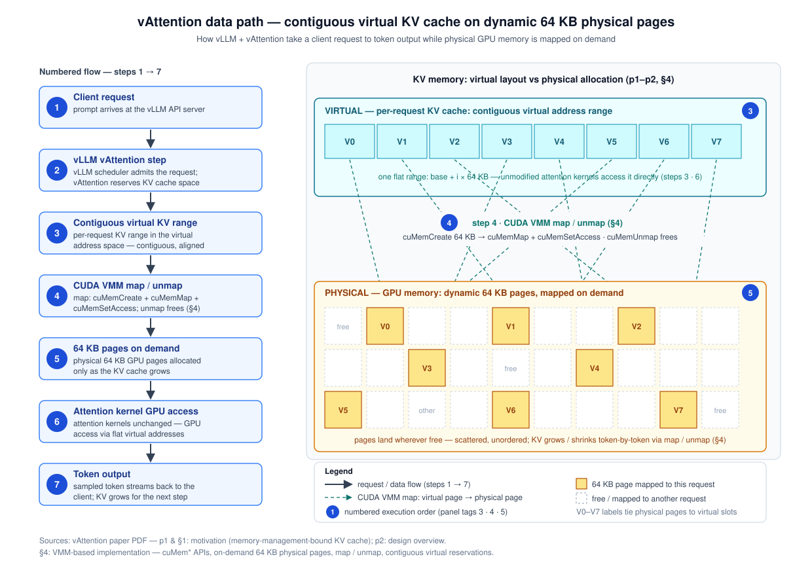

页内目录（点击展开/折叠）
vAttention：无 PagedAttention 的 LLM 服务动态显存管理
一句话判断
对「长上下文、prefill 占比高、注意力内核迭代快、A100/H100 自托管」的 LLM 服务，vAttention 用 CUDA 虚拟内存管理（VMM）把 KV cache 做成虚拟地址连续、物理页按需分配：在保留 PagedAttention 级碎片控制的同时，免掉分页注意力内核改写与 Block-Table 维护。论文口径下：端到端吞吐较分页内核（FlashAttention-2 / FlashInfer）最高 1.23×，decode 吞吐较 vLLM 最高 1.99×，在线服务中位请求延迟最高降 42%，FlashAttention-3 这类无分页支持的新内核零改造接入并带来 1.26–1.5× 提升；代价是 CUDA 12.1 / PyTorch 2.3.0 / 修改版 NVIDIA 驱动的供应链绑定、VMM 调用延迟需要专门隐藏（每页组增长约 5 毫秒量级），以及「已完成请求的物理页直接交给新请求复用」带来的租户隔离新议题。全部数字为论文条件性结果，禁止跨论文横比。P R I（代价与适用面判断为编辑观点）
3 分钟速读
- 问题：PagedAttention 用「用户态分页」解决 KV cache 碎片，代价是 KV 在虚拟地址上不再连续——注意力内核必须改写为按块寻址、框架要维护 Block-Table、CPU/GPU 关键路径都有开销。论文 Table 1（第 1 页）汇集证据：vLLM 分页 decode 内核比 FlashAttention-2 慢至 2.8×；块大小改变可使执行时间变化至 1.9×；FlashAttention-2 / FlashInfer 分页 prefill 内核分别慢至 37% / 42%。P
- 机制：用 CUDA VMM API 解耦虚拟与物理内存——预先预留大段虚拟连续地址空间，物理页运行时按需映射；默认页大小 2MB，修改开源 NVIDIA 驱动后另支持 64KB 页（第 1–2 页）。P
- 隐藏代价：VMM 调用走内核往返、延迟不低（第 6 页 Table 3：cuMemSetAccess 38µs 等）；vAttention 在 step 中于迭代开始前完成物理页映射（第 6 页），decode 期把映射与计算重叠、prefill 期延迟回收 + 急切分配（第 8 页）——给 Yi-34B 的 KV 增长一个页组约需 120 次 API 调用 ≈ 5 毫秒，必须移出关键路径。P
- 结果：端到端吞吐较 FA2/FlashInfer 分页内核至 1.23×（第 1 页）；decode 较 vLLM 至 1.99×/1.58×/1.53×（Yi-6B/Llama-3-8B/Yi-34B，第 9–11 页）；在线中位延迟降 42%/28%/29%（第 11 页）；FA3 在 H100 上开箱即用、较分页 FA2 提升 1.26–1.5×（第 2 页；H100 可移植性第 15 页）。P R
- 边界：decode 场景 vAttention 只是「与最优分页内核持平」（decode 是内存受限、分页开销可被掩盖）；收益随上下文长度与 P:D 比增大；64KB 页需修改驱动（供应链负担）；官方工件仓库为 github.com/microsoft/vattention（附录第 18–19 页锚定），本页不提供任何其他外部链接。P E I
论文声称的主要结果
| 指标（口径） | 数字 | 基线 | 完整条件（硬件 / 模型 / 精度 / 负载） | 来源页码 |
|---|---|---|---|---|
| 端到端 LLM 服务吞吐提升（长上下文） | 至 1.23× | PagedAttention 分页内核（FlashAttention-2、FlashInfer） | 1–2× A100 80GB；Yi-6B / Llama-3-8B / Yi-34B；精度论文未明确披露（正文仅以 P=2 即 FP16/BF16 举例计算尺寸）；离线长上下文负载（arXiv-Summarization，427 请求、上下文 64K–192K） | P 第 1 页（摘要）；第 11 页（台账 R1） |
| decode 吞吐提升（vs vLLM 内核） | 至 1.99× / 1.58× / 1.53× | vLLM PagedAttention decode 内核（对照内核：FA2 非分页 + vAttention） | Yi-6B（1×A100）/ Llama-3-8B（2×A100 TP-2）/ Yi-34B（2×A100 TP-2）；初始上下文 16K、批 ≤32；精度论文未明确披露 | R 第 9–11 页（Fig.8，台账 R1）；第 2 页（§1） |
| 在线服务中位请求执行延迟降幅 | 至 42% / 28% / 29% | FA2_Paged（对照 FA2_vAttention） | QPS 0.25 / 0.3 / 0.1（泊松到达）；512 请求、输入 22K–45K（均值 29K）、输出 6–3250（均值 348）、P:D≈129；A100 同上 | R 第 11 页（§7.4，台账 R1） |
| 新内核（FA3）开箱即用提升 | 1.26–1.5× | PagedAttention 版 FlashAttention-2 | FlashAttention-3 发布时无 PagedAttention 支持，vAttention 无需改内核接入；H100 可移植性另见第 15 页（台账 R2） | P 第 2 页（§1） R 第 15 页 |
术语与记号
- CUDA VMM
- CUDA 虚拟内存管理 API 族（cuMemAddressReserve / cuMemCreate / cuMemMap / cuMemSetAccess / cuMemUnmap …），允许虚拟地址预留与物理页分配分离——vAttention 的地基（第 1、6 页）。
- 虚拟连续（virtual contiguity）
- 每个请求的 K/V cache 在虚拟地址空间中是一段连续张量，注意力内核可像静态分配一样按平坦地址直接访问（第 1 页）。
- page-group / 页大小
- 一次 VMM 调用分配的一个或多个物理页。CUDA API 仅支持 2MB 页；vAttention 修改开源驱动后支持 64KB/128KB/256KB 页组（第 2、6 页）。
- reqId / 虚拟张量
- 框架启动时按「最大批 × 最大上下文」预留 2×N 个虚拟张量（N 为层数）；每个请求以唯一 reqId 占据其中不重叠的子区域（正文 §5，门控外转述）。I
- Block-Table
- PagedAttention 体系里框架维护的「逻辑块 → 物理块」映射表，注意力内核按它寻址非连续 KV——vAttention 的虚拟连续设计免除了它（第 1 页 Table 1 论证）。
- 论文出处
- 《vAttention: Dynamic Memory Management for Serving LLMs without PagedAttention》，ASPLOS '25（DOI 10.1145/3669940.3707256，第 1 页印刷信息）；本地文件 04_vAttention_2405.04437.pdf。
问题背景
KV cache 的显存的两难：碎片 vs 连续
每个请求的 KV cache 随 decode 每迭代增长一个 token，且总长度（输出多少 token）事先未知：按模型最大上下文静态预留（如 Yi-34B-200K 的 200K）会造成严重内部碎片，压低批大小与吞吐（第 1–2 页）。P vLLM 的 PagedAttention 借鉴操作系统按需分页，把 KV cache 切成小块按需分配，近乎完美地解决了碎片，已成为 TensorRT-LLM、HuggingFace TGI、LightLLM 等系统的事实标准（第 1 页）。P
PagedAttention 的根本代价：虚拟连续性丧失
动态分配的对象不保证连续——PagedAttention 在按需分配物理内存的同时，把 KV cache 的虚拟地址布局从连续改成了非连续（第 1 页）。由此产生三类问题：P
- 内核必须改写：注意力算子要为非连续 KV 块重写寻址逻辑，跟进新内核研究的成本变高；vLLM 分页 decode 内核已比 FlashAttention-2 慢至 2.8×（第 1 页 Table 1 / Table 7 口径）。P
- 框架冗余：服务框架要自建「块表管理器」，重复操作系统本已完成的虚→实地址翻译（第 1 页 Figure 1 论证）。P
- 运行时开销：分页 prefill 内核在 FlashAttention-2 / FlashInfer 中分别慢至 37% / 42%，decode 慢至 12%；块大小选择敏感（至 1.9× 波动）；CPU 侧 Block-Table 准备在 vLLM 早期实验中曾占 decode 迭代延迟约三成、修复后仍可达一成，TensorRT-LLM 亦报告过 >10% 吞吐回退（第 1 页 Table 1；CPU 侧数字出自正文 §3.3.2 第 4 页——台账门控外，此处仅定性转述）。P I（门控外转述标注）
底层症结：预留式 GPU 分配
cudaMalloc 一类的预留式分配会把虚拟与物理内存一次性锁死——即使虚拟地址没被访问，物理页也已占用。这与操作系统的按需分页（demand paging）相反。论文主张：把虚拟与物理内存的分配分开，才能同时保住碎片控制与虚拟连续性（第 1–2 页）。P
本页使用的延迟/吞吐口径
与全站一致，跨请求延迟类指标以 TTFT/TBT 讨论为站内通识口径；但需要注意：vAttention 论文未定义 TTFT/TBT 型 SLO 数值——其在线实验以固定 QPS（泊松到达）下的「请求端到端执行延迟 CDF / 中位数」与吞吐为准（第 11 页）。两套口径不可混用。P I
核心机制
1 · 虚拟连续 + 物理按需：一对分离的分配策略（第 1 页，台账 P1）
vAttention 为 KV cache 预先预留一段大的虚拟连续缓冲（像 PagedAttention 之前的系统），而把物理内存的分配推迟到运行时按需进行（像 PagedAttention）。虚拟地址的浪费无所谓——现代 64 位系统的进程虚拟地址空间极其充裕；物理页则只在 KV 真正增长时才映射进去。由此物理内存不碎片化，虚拟地址保持连续，未修改的注意力内核开箱即用（第 1–2 页）。P
2 · CUDA VMM API 与页大小（第 2、6 页，台账 P2/P3）
解耦依赖 CUDA VMM：cuMemAddressReserve 预留虚拟段、cuMemCreate 分配物理句柄、cuMemMap + cuMemSetAccess 把物理页映射进虚拟段并授权访问、cuMemUnmap / cuMemRelease 逆向回收。CUDA 原生只支持 2MB 大页——直接用会产生内部碎片；vAttention 修改开源的 NVIDIA 统一虚拟内存驱动，新增支持 64KB（以及 128KB/256KB）页组的自定义 vMem API 族；评测未发现 64KB 页拖慢注意力内核，即没有 TLB 抖动证据（第 2 页）。两套 API 的实测延迟见 数据路径 的表 B2。P I（综合表述）
3 · 迭代前映射：step 语义（第 6 页，台账 P3）
服务框架每迭代调用一次 step（传入各请求当前上下文长度）；vAttention 保证所有活跃请求的 KV 子张量在迭代开始前已由物理页支撑，然后才把执行权交回框架派发 GPU 内核。物理页不够时返回失败，框架可抢占请求以保证前进（与 vLLM 默认行为类似）。P
4 · 把 VMM 延迟移出关键路径（第 8 页，台账 P4）
给 Yi-34B（60 层）的一个请求增长一个页组需要 120 次 cuMemMap + cuMemSetAccess、每次约 40µs——合计约 5 毫秒，绝不能同步做。两个优化：P（第 8 页）
- decode：映射与计算重叠。decode 每迭代每请求只产出 1 个 token，下一迭代是否需要新页组是可预测的——vAttention 用后台线程在上一个迭代执行期间完成下一迭代的物理页映射。P
- prefill：延迟回收 + 急切分配。请求 R1 完成后不急于收回物理页，而是把它的 reqId 连同已映射页面直接交给新请求 R2 复用（R2 上下文更长才需追加分配）；同时常备一个「预热」的空闲 reqId，新请求到达即接管，再为下一个急切预映射。仅当缓存的页组低于 GPU 显存约 10% 时才真正触发回收。P
- 推断：综合 P3+P4——内存增长被设计为「提前映射 + 计算期隐藏」，重映射不应阻塞服务主循环；这是本页的解读而非论文印刷声明。I（台账 I1）
GPU / 系统数据路径

端到端文字序列
- ① 请求进入：客户端请求到达 vLLM API 服务器（论文实现以 vLLM 为承载框架，第 2 页）。P
- ② 调度与 step：vLLM 调度器接纳请求；框架调用 vAttention 的 step，确保各活跃请求的 KV 空间在本迭代开始前已就绪（第 6 页）。P
- ③ 虚拟连续预留：每个请求在虚拟地址空间中占据一段连续、对齐的 KV 区段（init 时按最大批 × 最大上下文预留，reqId 定位子区域；布局细节为正文转述）。P I（细节转述）
- ④ CUDA VMM 映射/解除映射：映射走 cuMemCreate + cuMemMap + cuMemSetAccess，回收走 cuMemUnmap；vMem 扩展把后两步合并以支持 64KB 页组（第 6 页 Table 3）。P
- ⑤ 物理页按需分配：只有当 KV 随 token 增长耗尽已映射页时，才映射新的 64KB 物理页——物理显存哪里有空就落哪里，与虚拟布局无关（第 1、2、6 页）。P
- ⑥ 注意力内核直接访问：FlashAttention-2 / FlashInfer / FA3 等未修改内核把 KV 当作普通连续张量，经平坦虚拟地址由 GPU MMU 完成到散布物理页的翻译——无需 Block-Table（第 1 页；内核对照见第 9–11 页）。P R
- ⑦ token 流式返回：采样 token 回传客户端；decode 期下一迭代所需的新页映射已由后台线程与计算重叠完成（第 8 页）。P
| 组件 | 面 | 职责 | 证据 |
|---|---|---|---|
| vLLM 调度器 + 请求池 | 控制面 | 请求接纳、批组合；每迭代调用 step 传入各请求上下文长度 | P 第 2、6 页 |
| vAttention 库（init / alloc_reqid / step / free_reqid） | 显存管理面 | 虚拟张量预留、reqId 分配、迭代前保证物理页就绪、不足时返回失败交由框架抢占 | P 第 6 页（step 语义；API 全集为正文转述 I） |
| 后台线程 | 显存管理面 | decode 映射与计算重叠；延迟回收 + 急切分配（缓存页组 <10% 显存才回收） | P 第 8 页 |
| CUDA 驱动 / VMM（含修改版开源驱动） | 内核层 | 虚拟/物理解耦的 map / unmap；原生 2MB 页 + 扩展 64KB 页组 | P 第 2、6 页 |
| 注意力内核（FA2 / FlashInfer / FA3，未修改） | 计算面 | 按平坦虚拟地址直接读写连续 KV 张量；批组成变化时由框架更新 cache_batch_idx 映射 | P 第 1–2 页 R 第 9–11 页 |
| API | 作用 | cuMem（仅 2MB） | vMem（64KB 档） | 备注 |
|---|---|---|---|---|
| cuMemAddressReserve / vMemReserve | 虚拟地址预留 | 2 | 18 | *仅框架启停时调用一次 |
| cuMemCreate / vMemCreate | 分配物理内存句柄 | 29 | 1.7 | vMem 支持 64–256KB 页组 |
| cuMemMap / vMemMap | 物理句柄映射进虚拟缓冲 | 2 | 8 | vMemMap 合并了 Map+SetAccess |
| cuMemSetAccess | 授权虚拟缓冲访问 | 38 | — | 已并入 vMemMap |
| cuMemUnmap | 解除映射 | 34 | — | 已并入 vMemRelease |
| cuMemRelease / vMemRelease | 释放物理页 | 23 | 2 | 合并 Unmap+Release |
| cuMemAddressFree / vMemFree | 释放虚拟缓冲 | 1 | 35 | *仅框架启停时调用一次 |
量级感受：给 Yi-34B（60 层 → 120 个 K/V 张量）的一个请求增长一个页组 ≈ 120 次 Map+SetAccess × 约 40µs ≈ 5 毫秒——这就是必须做重叠与延迟回收的原因（第 8 页）。P
架构权衡
内核零改写 ↔ 驱动 fork 负担
注意力内核开箱即用、新内核（FA3）零改造接入（第 1–2 页），省下的是持续性的内核维护成本；但 64KB 页组要修改开源 NVIDIA 驱动，换来的是驱动 fork 的长期维护与版本跟随义务（第 2 页）。P I（维护成本判断）
prefill 大赚 ↔ decode 持平
prefill 是计算受限、分页开销无处可藏，vAttention 提升明显（192K 上下文较 FA2_Paged 1.24–1.26×，第 9–11 页）；decode 是内存受限、访存停顿本就掩盖分页开销，vAttention 只是与最优分页内核打平（第 11 页）——收益结构高度依赖负载形状。R
VMM 灵活性 ↔ API 延迟
虚拟/物理解耦是能力来源，也是新成本：单次 VMM 调用微秒级、一个页组增长合计毫秒级（第 6、8 页），必须靠可预测性（decode 每迭代 +1 token）+ 后台线程 + 延迟回收来隐藏——机制复杂度从「内核改写」转移到了「分配调度」。P I（综合判断）
2MB 大页 ↔ 64KB 细粒度
默认 2MB 页零驱动改动但内部碎片大；64KB 页把分配粒度调细、碎片逼近 PagedAttention 的块粒度，代价是修改驱动 + 更多映射调用（第 2 页；页组与延迟对照见第 6 页 Table 3）。二者是同一旋钮的两档，不是免费午餐。P I（台账 I2）
物理页跨请求复用 ↔ 隔离
延迟回收把已完成请求的物理页连同 reqId 直接交给新请求（第 8 页）——性能上极佳，但「新请求读到上一请求残留 KV 页」在机制上是默认行为；多租户强隔离场景必须另加清零/分域策略，论文未涉及。P（机制） I（安全含义）
虚拟地址近乎无限 ↔ 真实显存上限
虚拟连续以「浪费虚拟地址」换「不碎片化物理显存」，前提是 64 位虚拟地址空间充裕；真正约束容量的仍是物理显存与 VMM 可映射的页数——容量规划从「碎片率」转移到「页组粒度 × 物理总量」。I（设计含义推断，台账 I3 关联）
云上部署映射
| 维度 | 论文配置（P/R/E） | 云上映射（E/I，示例非推荐） | 说明 |
|---|---|---|---|
| GPU 实例与拓扑 | Yi-6B：1× A100 80GB；Llama-3-8B / Yi-34B：2× NVLink 互联 A100（TP-2）；H100 1–2 张验证可移植 R（第 9–11 页 Table 5 口径；第 15 页） | 单卡实例族（A100 80GB）起步，大模型选 NVLink/NVSwitch 互联的多卡实例；H100 实例族用于 FA3 路线 E | TP 度决定虚拟张量数量与页组 token 容量，拓扑带宽影响 TP 效率 I |
| 驱动与软件栈 | 复现环境绑定 CUDA 12.1、Python 3.10、PyTorch 2.3.0 与修改版开源 NVIDIA 驱动；论文明言更高 CUDA 版本「可能可用也可能不可用」 E（附录第 18–19 页，台账 E1） | 自定义镜像 + 固定驱动/CUDA 版本；将驱动 fork 纳入镜像构建流水线与版本清单 E I | 驱动层改动是本方案最重的运维绑定项，升级窗口需专门评审 I |
| 部署形态 | vAttention 以库形态集成进 vLLM（第 2 页）P | 容器化推理服务（vLLM + vAttention 镜像）；单实例内生效，不要求跨节点特殊网络 E | 与分离式架构（如 Mooncake 类）正交：vAttention 解决的是实例内 KV 显存管理 I |
| 页大小策略 | 默认 2MB；64KB 需修改驱动；页组大小在 init 时配置 P（第 2、6 页） | 按负载分型配置：延迟敏感在线服务可用默认 2MB 档，吞吐型批处理可用 64KB 档 I | 页组粒度影响可支撑的最大批大小与碎片率 I |
| SLO / 容量口径 | 论文未明确披露显式 TTFT/TBT SLO；在线实验以固定 QPS（0.1–0.3）下请求执行延迟 CDF/中位数为准（第 11 页）R | 云上 SLO 建议以「请求端到端执行延迟 P50/P99 + 容量 QPS」表达，压测复现论文的泊松到达 + FCFS 设定 I | 与站内 TTFT/TBT 口径页对照时必须先换算口径 I |
| 可观测 | 论文未披露运维指标体系 I（缺口） | 指标面：同步分配延迟尖峰（未重叠时毫秒级）、最大批大小随页组策略的变化、碎片/页组缓存水位、TP 拓扑健康 I | 分配延迟尖峰重现即说明重叠优化失效或配置不当 I |
成本 / 性能 / SLO
SLO 与实验口径（论文定义）
| 实验 | SLO / 关键条件 | 系统配置 | 结果 | 来源 |
|---|---|---|---|---|
| decode 内核微基准（第 9–11 页） | 初始上下文 16K；批 ≤32；按 400 次 decode 迭代均值折算吞吐 | FA2_vAttention vs FA2_Paged / FI_Paged / vLLM | vs vLLM 至 1.99×；与 FA2_Paged 持平 | R R1 |
| prefill 内核/端到端（第 9–11 页） | 上下文 1K–192K；prefill 吞吐 = 每秒处理 prompt token 数 | FA2/FI_vAttention vs 各自 _Paged | 192K 时 1.24–1.26×（FA2） | R R1 |
| 离线端到端（第 11 页） | 427 请求；上下文 64K–192K；输出 17–5153；P:D≈356；口径 = 每分钟完成请求数 | FA2_vAttention vs FA2_Paged / FI_Paged | 1.13–1.18× / 至 1.23× | R R1 |
| 在线端到端（第 11 页） | 512 请求；输入 22K–45K（均值 29K）、输出 6–3250（均值 348）、P:D≈129；泊松到达、FCFS；接近饱和容量运行；口径 = 请求执行延迟 CDF | FA2_vAttention vs FA2_Paged | 中位延迟 −42%/−28%/−29% | R R1 |
| FA3 可移植性 / H100（第 15 页；数字第 2 页） | FA3 发布时无 PagedAttention 支持；vAttention 零内核改动接入；1–2× H100 | FA3_vAttention vs 分页 FA2 | 1.26–1.5× | P 第 2 页 R 第 15 页 |
容量规划变量
- 上下文长度与 P:D 比：论文明确「收益与上下文长度、prefill:decode token 比成正比」——prefill 占比越高，vAttention 相对分页内核越有利（第 11 页）；R
- 注意力内核选择：vAttention 的价值在「随时换上最快的非分页内核」——内核层的进步直接转化为服务层收益（如 FA3，第 2 页）；P
- 页组粒度：2MB 与 64KB 档分别面向延迟敏感与吞吐型负载，影响可支撑的最大批大小（第 6 页页组配置；具体批上限数字在台账门控外，本页不展开）；P I
- 分配延迟余量：VMM 分配带宽远高于 decode 期 KV 增长需求（摘要文件同口径记录），分配速度本身不构成瓶颈——瓶颈在单次页组增长的延迟隐藏。I
成本模型（参数化，非论文结论）
论文不含任何成本数据（仅吞吐/延迟）。架构师可用下式估算（I，价格项为参数）：
每百万生成 token 成本 ≈ ( p_gpu × N_GPU ) ÷ ( T_gen × (1 − φ) ) × 10⁶ …（公式 1）
- p_gpu：单卡时租价（A100/H100，按查询日云价代入，E）；
- N_GPU：实例卡数（论文口径 1–2 张起，TP-2 时为 2，R）；
- T_gen：实测生成吞吐（token/s）——内核选择、批上限、P:D 比、页组策略共同决定；可按论文相对收益作修正（如 prefill 主导负载对分页基线 ×1.13–1.23，R）；
- φ：显存浪费率（内部碎片 + 预留损耗）——2MB 档高于 64KB 档；64KB 需驱动支持。I
敏感项：负载 P:D 比升高 → T_gen 相对基线的收益放大（第 11 页 R）；页组从 2MB 换 64KB → φ 下降但映射调用增多、依赖驱动 fork（第 2、6 页 P）；换用更新内核（FA3/H100）→ T_gen 抬升 1.26–1.5×（第 2 页 P）。
安全与可运维性
论文披露范围
- 核验门控内论文未涉及安全、隐私、多租户与故障恢复议题——以下部署要点除标注论文事实外均为编辑推断。I
- 官方工件仓库：github.com/microsoft/vattention——论文内唯一锚点是附录（第 18–19 页）；仓库自身的可用性/内容属外部事实，本次未联网核验，本页亦不提供任何其他外部链接。E（台账 E1）
- 复现环境明确要求特权容器（docker --cap-add=SYS_ADMIN）与 HuggingFace 令牌（HF_TOKEN）访问 Llama-3-8B（第 19 页附录）。E
论文未披露、部署方必须自行覆盖的项
| 维度 | 论文状态 | 部署建议（I） |
|---|---|---|
| 租户隔离 / KV 残留 | 机制默认跨请求复用物理页：完成请求的页组经延迟回收直接交给新请求（第 8 页）P | KV 含用户 prompt 衍生状态，页残留是设计默认行为而非缺陷；多租户必须显式决定：按租户分域部署、或回收前清零、或默认关闭跨租户复用，并过合规评审 |
| 缓存管理语义 | 页组缓存 <10% 显存才回收；急切预映射常备空闲 reqId（第 8 页）P | 把「缓存页组水位」「回收触发阈值」纳入配置审计——它们同时影响性能与残留生命周期 |
| 供应链 | 官方仓库 microsoft/vattention（附录第 18–19 页锚定）；复现绑定 CUDA 12.1 / PyTorch 2.3.0 / 修改版开源 NVIDIA 驱动；归档 DOI 10.5281/zenodo.14048692（第 18 页印刷信息，本页不作链接）E | 仅从官方仓库/归档 DOI 构建镜像并锁定 digest；驱动 fork 纳入 SBOM 与上游同步计划；任何「第三方优化版 vAttention」镜像视为未核验供应链 |
| RBAC / 访问控制 | 论文未涉及；复现流程需要 SYS_ADMIN 特权容器与 HF_TOKEN（第 18–19 页）E | 生产收敛特权：复现环境与生产镜像分离；模型仓库令牌走密钥管理；驱动加载、镜像推送、仓库写权限分角色授权 |
| 监控告警 | 未披露指标体系 I（缺口） | 对同步分配延迟尖峰（毫秒级即异常）、step 失败/抢占率、最大批大小（随页组策略漂移）、页组缓存水位、TP 拓扑健康设告警 |
| 参数调优 | 页组大小为 init 配置项（第 6 页）P | 页组粒度、回收阈值按真实负载在线调优；论文数字基于 vLLM v0.2.7 与特定模型，不能直接迁移到任意生产环境 |
| 故障恢复 | 未披露 I（缺口） | 分层演练：GPU 驱动/VMM 层故障（映射失败、显存耗尽）与推理服务层故障（step 失败→框架抢占请求）分开处置；实例级自愈重建后预热页组缓存 |
| 回滚 | 论文明言更高 CUDA 版本「可能可用也可能不可用」（附录第 18 页）E | 保留两条已验证回退路径：① 换回标准驱动 + PagedAttention 内核后端；② 锁定 CUDA 12.1/PyTorch 2.3.0 的旧镜像；驱动与服务版本分开变更、可独立回滚 |
适用 / 不适用场景
适用（触发条件 → 理由）
- 长上下文 / prefill 占比高的负载：触发条件——输入数万 token 起、P:D 比高（如摘要、文档问答、代码补全的长前缀场景）。理由——论文明确收益与上下文长度和 P:D 比正相关，实测离线吞吐较分页内核 1.13–1.23×、在线中位延迟至 −42%（第 11 页）。R
- 注意力内核快速迭代的团队：触发条件——希望随时接入最新非分页内核（FA2 → FlashInfer → FA3）而不维护分页移植。理由——虚拟连续 KV 让未修改内核开箱即用；FA3 发布时无 PagedAttention 支持，vAttention 零内核改动接入并带来 1.26–1.5× 提升（第 1–2 页）。P
- A100/H100 自托管、软件栈可控的服务：触发条件——能用自家镜像管理驱动与 CUDA 版本。理由——论文在 A100 上完成主要评测并验证 H100 可移植（第 9–11、15 页），硬件路线与主流云 GPU 实例族吻合。R
- 被分页内核开销困住的 vLLM 类部署：触发条件——profile 显示 Block-Table/分页分支开销或块大小敏感性问题（至 1.9× 波动，第 1 页）。理由——同一框架内把分页内核换成「非分页内核 + vAttention」即可消除该层开销，decode 吞吐较 vLLM 内核至 1.99×（第 9–11 页）。P R
不适用（触发条件 → 理由）
- decode 主导、短上下文负载：触发条件——输出远长于输入、上下文短（闲聊式短对话）。理由——decode 是内存受限，分页开销可被访存停顿掩盖，vAttention 仅与最优分页内核持平（第 11 页），收益有限（按论文条件反推）。R I
- 不可修改 GPU 驱动的受管环境：触发条件——托管 K8s 节点池/托管 GPU 服务不允许替换驱动，或无驱动 fork 维护能力。理由——64KB 细粒度页依赖修改版开源驱动（第 2 页），退回 2MB 默认档则碎片与批上限受限，机制收益打折。P I
- 硬多租户隔离 / 强合规业务：触发条件——跨租户数据严格不可见、KV 残留须可审计清除。理由——跨请求物理页复用是机制默认（第 8 页），需关闭复用或分域部署，性能前提随之改变；论文未提供隔离机制。P（机制） I（缺口判断）
- 非 CUDA / 旧 CUDA 生态：触发条件——非 NVIDIA GPU，或驱动/CUDA 版本无法锁定在经验证组合（附录口径 CUDA 12.1，更高版本不保证可用，第 18 页）。理由——整套机制立在 CUDA VMM 与开源驱动改动之上。E I
- 期待调度/多实例优化的团队：触发条件——诉求是过载准入、prefill/decode 分离、跨实例缓存复用。理由——vAttention 只解决单实例内 KV 显存管理，不含调度器；这类诉求应对照本站 DistServe / Sarathi-Serve / Mooncake 页。I
实验与指标
复现实验的完整条件（论文核验门控内）
| 条件维度 | 论文口径 | 来源 |
|---|---|---|
| 硬件 | NVIDIA A100 80GB：Yi-6B 单卡，Llama-3-8B / Yi-34B 各 2 张 NVLink 互联卡（TP-2）；H100 1–2 张用于可移植性 | R 第 9–11 页（R1）；第 15 页（R2） |
| 模型 | Yi-6B（32 QHead / 4 KVHead / 32 层）、Llama-3-8B（32 / 8 / 32）、Yi-34B（56 / 8 / 60） | R 第 9 页 Table 5（R1） |
| 精度（dtype） | 论文未明确披露实验精度；正文尺寸计算仅以 P=2（FP16/BF16 每元素 2 字节）举例 | P 第 6 页 I（不臆测） |
| 框架 / 内核版本 | vLLM v0.2.7 为公共框架；FlashAttention-2 v2.5.9、FlashInfer v0.4.0 作为注意力后端集成 | R 第 9 页（R1） |
| 基线配置 | KV block size：vLLM 与 FlashInfer 取 16，FA2 分页内核取 256（各自最优配置） | R 第 9 页（R1） |
| 负载（微基准） | decode：初始上下文 16K、批 ≤32（Yi-34B 批 32 时 OOM）；prefill：上下文 1K–192K；吞吐按 400 次 decode 迭代均值折算 | R 第 9–11 页（R1） |
| 负载（端到端） | 离线：arXiv-Summarization 427 请求、上下文 64K–192K、输出 17–5153、P:D≈356；在线：512 请求、输入 22K–45K（均值 29K）、输出 6–3250（均值 348）、P:D≈129、泊松到达 + FCFS、接近饱和容量 | R 第 11 页（R1） |
关键结果（均带条件）
| 结论（指标） | 数字 | 完整条件（硬件 / 模型 / 精度 / 负载 / 基线） | 来源页码 |
|---|---|---|---|
| vLLM 分页 decode 内核落后 FA2 | 至 2.8× / 1.5× / 2.5× 延迟 | Yi-6B / Llama-3-8B / Yi-34B；A100；Table 7 口径（注意力内核总延迟，毫秒/迭代） | P 第 1 页（Table 1）；第 9–11 页（R1） |
| 分页 prefill 内核开销 | FA2 −37% · FlashInfer −42% | 非分页内核对照；Fig.2（图注口径：Llama-3-8B，1×A100） | P 第 1 页（摘要/Table 1）；R R1（Fig.2） |
| 块大小敏感性 | 至 1.9× | vLLM 分页 decode 内核执行时间随块大小（64/128 时最差）；Fig.3 | P 第 1 页；R R1（Fig.3） |
| decode 吞吐 vs vLLM 内核 | 至 1.99× / 1.58× / 1.53× | Yi-6B / Llama-3-8B / Yi-34B；A100（1–2 卡 TP-2）；初始上下文 16K、批 ≤32；FA2_vAttention 与 FA2_Paged 持平且同为最优 | R 第 9–11 页（Fig.8，R1）；第 2 页 |
| prefill 吞吐 @192K | 1.24× / 1.26× / 1.24× | FA2_vAttention vs FA2_Paged；Yi-6B / Llama-3-8B / Yi-34B；上下文 192K | R 第 9–11 页（R1） |
| 离线端到端吞吐 | vs FA2_Paged 1.18×/1.15×/1.13×；vs FI_Paged 1.19×/1.23×/1.14× | 427 请求、64K–192K 上下文、P:D≈356；三模型同上 | R 第 11 页（Fig.9，R1） |
| 在线中位请求延迟降幅 | −42% / −28% / −29% | QPS 0.25 / 0.3 / 0.1（Yi-6B / Llama-3-8B / Yi-34B）；512 请求、均值输入 29K；主因是更快 prefill 消除排队延迟 | R 第 11 页（§7.4，R1） |
| 页组增长的同步映射代价 | 约 5 ms | Yi-34B 60 层 → 120 次 cuMemMap+cuMemSetAccess × 约 40µs；单请求 KV 增长一个页组 | P 第 8 页；API 延迟第 6 页 Table 3 |
| FA3 开箱即用（H100） | 1.26–1.5× | FA3 无 PagedAttention 支持；vAttention 零内核改动接入；对照分页 FA2；H100 可移植性第 15 页 | P 第 2 页 R 第 15 页（R2） |
公平性限制与已知差异
- 全部数字为对门控页的转述；精确引用请回查 PDF 原文（摘要文件同此声明）。P I
- 基线时点：对照基于 vLLM v0.2.7（论文发表时点的「公平比较」口径，第 9 页）；当前 vLLM 及各内核库已持续演进，绝对数字不能外推到今日版本栈。R（论文口径） I（时效判断）
- 精度未明示：实验 dtype 论文未明确披露，本页不臆测；仅正文尺寸计算以 P=2（FP16/BF16）举例（第 6 页）。P
- 数字不可与 Mooncake、DistServe 等其他论文横比（硬件、负载、口径均不同；本论文亦无 TTFT/TBT SLO 口径）。I
核对 / 复现路径（附录第 18–19 页，台账 E1）
论文提供完整工件附录；以下步骤均出自附录原文（E，页码 18–19），顺序编排为编辑建议（I）：
- 克隆官方仓库 github.com/microsoft/vattention（唯一官方来源；归档 DOI 10.5281/zenodo.14048692，本页不作链接）；
- 环境：conda（Python 3.10）+ CUDA 12.1 + PyTorch 2.3.0；或直接用预装 Docker 镜像 rnp1910/vattention:asplos_25_pytorch_run（需 --cap-add=SYS_ADMIN 特权）；
- huggingface-cli login 提供 HF_TOKEN 以访问 Llama-3-8B；
- 硬件：2 张 NVLink 互联 A100 80GB、200GB 磁盘；准备约 1 小时，实验 1–2 天（Fig.2/3/11 数分钟，Fig.4/7 约 1 小时，Fig.8/9 各 12 小时以上）；
- ./run_all.sh 或按图运行 run_figure_*.sh，输出落在 logs/ 与 plots/，图格式与论文一致但绝对数字随环境浮动。
论文 / 链接 / 延伸阅读
| 资源 | 级别 | 链接 / 文件 |
|---|---|---|
| 论文：《vAttention: Dynamic Memory Management for Serving LLMs without PagedAttention》（ASPLOS '25，DOI 10.1145/3669940.3707256） | P | 题名与出处取自第 1 页印刷信息与证据台账；本地 04_vAttention_2405.04437.pdf |
| 官方工件仓库（本页唯一外链） | E | github.com/microsoft/vattention（论文附录第 18–19 页唯一锚定；仓库内容本次未联网核验，属外部工件事实） |
| 工件归档 DOI（第 18 页印刷信息，仅文字引用不作链接） | E | 10.5281/zenodo.14048692 |
| 站内对照阅读 | 站内 | DistServe（01，分离式服务） · Sarathi-Serve（02，chunked prefill） · Mooncake（03，KVCache 中心分离架构） · FlashInfer（05，注意力内核库，与 vAttention 互补：内核层 vs 显存管理层） |
给架构师的决策清单
证据台账
| 编号 | 关键结论（摘要） | 级别 | 定位（PDF 页码 + 章节/图号） | 核验状态 |
|---|---|---|---|---|
| P1 | vAttention 提供虚拟连续 KV cache，用 CUDA 虚拟内存管理（VMM）把物理内存分配与虚拟地址空间解耦 | P | 第 1 页 · 摘要/§1 | 已核验（PDF 原页，台账门控） |
| P2 | 默认页大小 2MB；修改版驱动另提供 64KB 页 | P | 第 2 页 · §1 | 已核验（PDF 原页，台账门控） |
| P3 | vAttention step 中，物理页在迭代开始前完成映射 | P | 第 6 页 · Sec.4（Table 3 VMM API 延迟同页） | 已核验（PDF 原页，台账门控） |
| P4 | vAttention 把 decode 期执行的映射与计算重叠 | P | 第 8 页 · Sec.6 | 已核验（PDF 原页，台账门控） |
| R1 | 实验覆盖 Yi-6B、Llama-3-8B、Yi-34B（A100），对比呈现于 Fig.2 与 Fig.3（吞吐/开销对照，含 decode vs vLLM 至 1.99×、离线 1.13–1.23×、在线中位延迟至 −42% 等第 9–11 页数字） | R | 第 9–11 页 · Experiments；Fig.2；Fig.3 | 已核验（PDF 原页，论文报告结果） |
| R2 | vAttention 可移植到 H100 | R | 第 15 页 · H100 portability | 已核验（PDF 原页，论文报告结果） |
| E1 | 官方工件仓库为 github.com/microsoft/vattention；论文内仅由附录（第 18–19 页）锚定。本证据文件不对仓库作任何外部第三方断言（博客、第三方评测、采用情况均未核验） | E | 第 18–19 页 · 附录（仅论文侧锚点）；仓库本身为外部工件 | 部分核验（PDF 附录锚点已核验；仓库存在性/可用性未联网核验，无捏造断言） |
| I1 | 由 P3+P4 推断：内存增长靠「迭代前映射 + decode 期映射藏进计算」处理，即重映射被设计为不阻塞服务主循环 | I | 源自 P3（第 6 页）与 P4（第 8 页） | 编辑标注完成（解读，非论文印刷声明） |
| I2 | 由 P2 推断：2MB 页是默认工作点；修改驱动的 64KB 选项是「更细分配粒度 ↔ 额外映射工作」的可选权衡 | I | 源自 P2（第 2 页） | 编辑标注完成（解读，非论文印刷声明） |
| I3 | 由 R1+R2 推断：设计在 A100 上评测、演示可移植到 H100，表明方案面向跨代际的 NVIDIA 数据中心 GPU | I | 源自 R1（第 9–11 页）与 R2（第 15 页） | 编辑标注完成（解读，非论文印刷声明） |